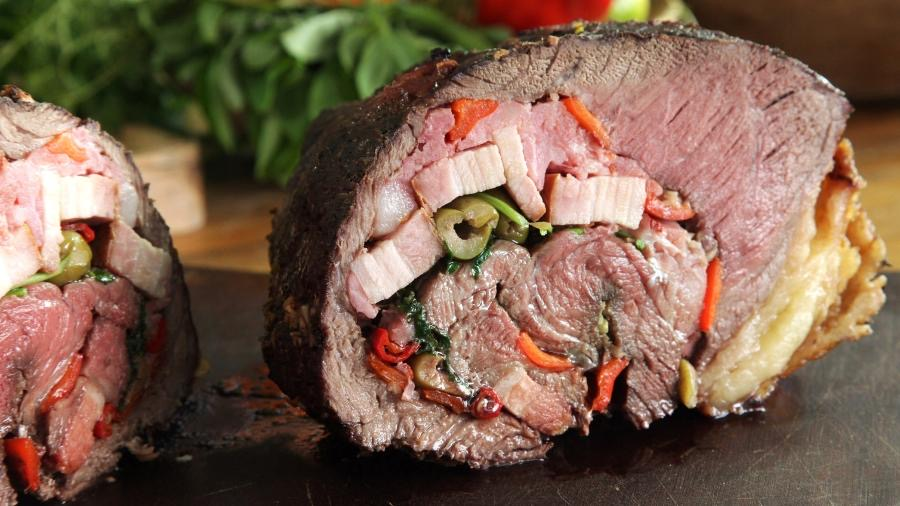

Carnes · Bovinos
Assado com manjericão

Ingredientes
- 1 xícara de folhas de manjericão
- 2 dentes de alho
- 1/2 xícara de nozes
- 1/3 xícara de água
- 2 xícaras de migalhas de pão
- sal e pimenta-do-reino a gosto
- 2 colheres (sopa) de azeite
- 1 pedaço grosso (cerca de 1,8 kg) de coxão mole
- 4 colheres (sopa) de óleo
Modo de preparo
- No liquidificador, bata o manjericão, o alho, as nozes e a água até obter uma pasta. Transfira para uma tigela, junte as migalhas de pão, sal, pimenta e o azeite; misture bem.
- Abra o coxão mole como uma manta, sem cortar totalmente. Tempere com sal e pimenta, espalhe o recheio de manjericão e feche/amarre a peça.
- Numa panela grande, aqueça o óleo e doure a carne de todos os lados.
- Acrescente um pouco de água quente, tampe e cozinhe em fogo brando até a carne ficar macia, regando e completando o líquido quando necessário.
- Deixe esfriar um pouco. Para esfriar rápido antes de congelar, ponha a panela numa bacia com água e gelo.
Observação
Congelamento: coloque a carne e o molho num recipiente rígido, cubra com filme plástico e congele. Descongelamento: retire a embalagem, aqueça em fogo brando na panela e fatie para servir.